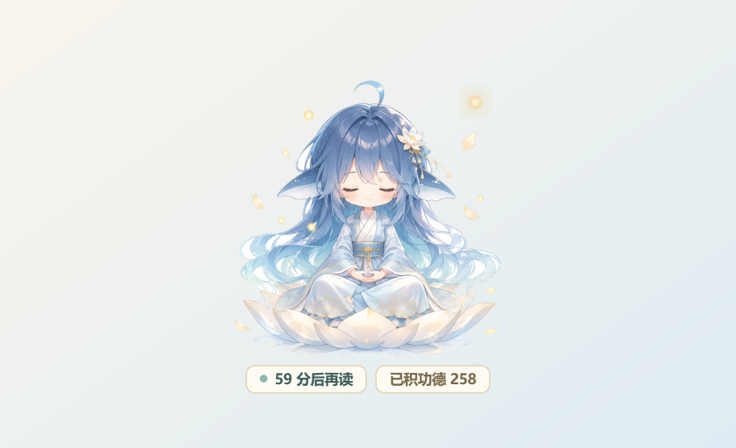
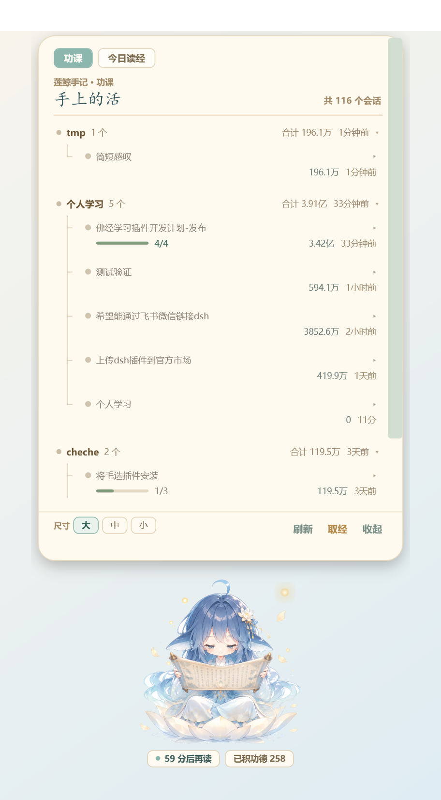
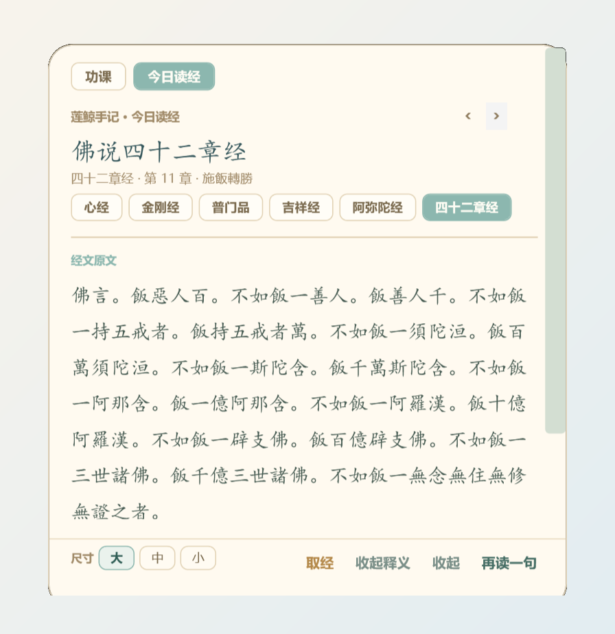

莲鲸
Lianjing · DSH Desk Pet
DSH 插件 · 桌面宠物
她常驻 DSH 窗口的右下角。功课面板按项目列出全部会话：哪一条在跑、子任务做到第几步、消耗多少 token、花了多长时间。 点开一行，回到对应的对话。闲下来，她陪你敲两下木鱼、读两页经。

DSH 同时开几个会话、每个会话下挂几个子 agent，各自的进度与消耗都收进同一张卡片。

正经事之外的两种小消遣，都在同一张浅杏色卡片上。

同一只宠物，两种落点，一档缩放。
长在 DSH 窗口右下角，随窗口移动。卡片为浮层，不参与排版，贴近屏幕边缘时自动内收。
点「放她到桌面」变为透明置顶窗口，可拖到任意位置；关闭 DSH 后仍在，Windows 专属，纯 WPF 无第三方依赖。
100% / 80% / 62%，最大档为原尺寸。网页端只缩宠物层，卡片文字保持可读；档位本地记住。
三条路，择其一。需要 DSH 桌面版（Windows）；npm 尚未发布，官方「发现」里直接搜不到。
最省事，给同事也是这一条
到 Releases 下载 dsh-plugin-lianjing-2.0.2.tgz（或 .zip），然后执行：
dsh plugin --profile desktop add ^ "D:\下载\dsh-plugin-lianjing-2.0.2.tgz"
路径改为文件实际所在位置。
在 DSH 里点着装，不用命令行
插件 → 发现 → 添加索引源，粘贴下面的地址，然后点「安装」。
https://cdn.jsdelivr.net/gh/33333cheche-web/ dsh-plugin-lianjing@main/market/index.json
索引指向固定提交，安装到的版本不会随 main 变动。
需要改代码时用
git clone https://github.com/ 33333cheche-web/dsh-plugin-lianjing.git dsh plugin --profile desktop add ^ "link:D:\path\to\dsh-plugin-lianjing"
改动页面后刷新即生效；改动宿主需重启 DSH。
两件事
第一，把 DSH 完全退出再重开，包括托盘图标，右下角才会出现她。
第二，需要撤掉时执行：
dsh plugin --profile desktop remove dsh-plugin-lianjing
dsh-plugin-lianjing（原 dsh-plugin-fojing-pet），先移除旧包再装新包；已积功德会自动迁移，不清零。
三条事先说清楚，省得装上之后产生误会。
默认每小时出卡一次，22:00 至次日 06:00 静默，每日最多 12 张。内容全部来自本地语料，不调用模型。
没有会话在跑就没有佛光，进度取会话自身的待办记录，读不到就留空，不补默认值。
不判定修行境界，不承诺消灾、治病、开悟、转运，也不做宗派高下之判；木鱼彩头是玩笑，不进真实记录。
不替代医疗、法律与投资建议；处于明显痛苦中时，建议寻求现实中的专业帮助。